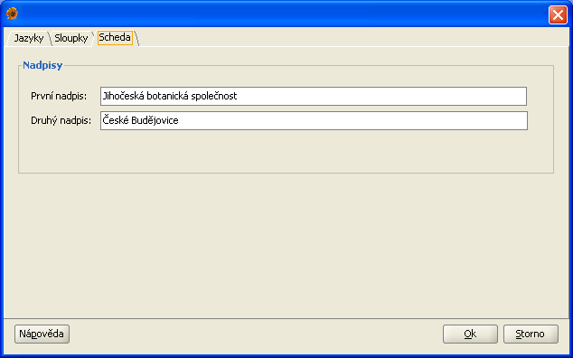

Chování Plantlore je možné do jisté míry ovlivnit nastavením. Možnosti nastavení se vyvolávají z menu Soubor.
Dialog Nastavení obsahuje čtyři záložky. Z toho pouze nastavení jazyku se projeví až po restartu aplikace. Ostatní změny se projeví hned po potvrzení kliknutím na Ok.
V záložce Sloupky je možné si vybrat sloupky a pořadí, ve kterém se mají zobrazovat v přehledu nálezů. Nastavení se projeví ihned po potvrzení klikntím na Ok.

Plantlore dovoluje jednoduchou úpravu nadpisů, které se generují ve schedě. Slouží k tomu záložka Scheda.
